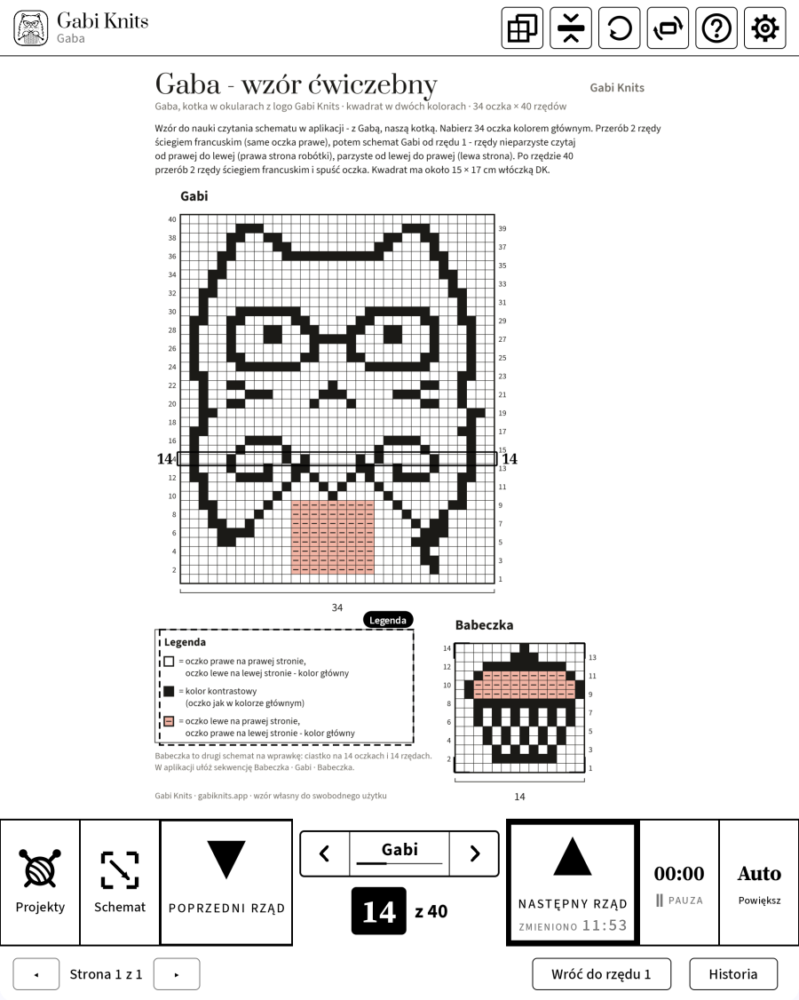
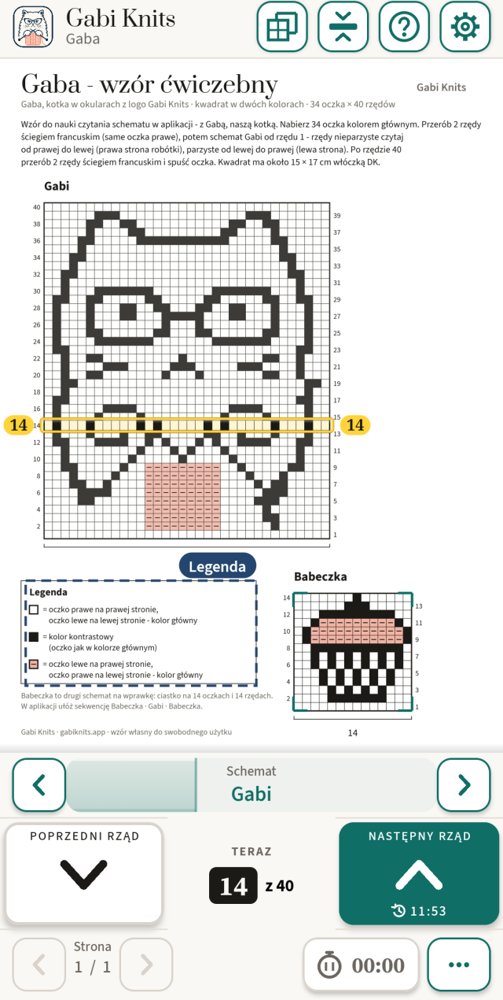
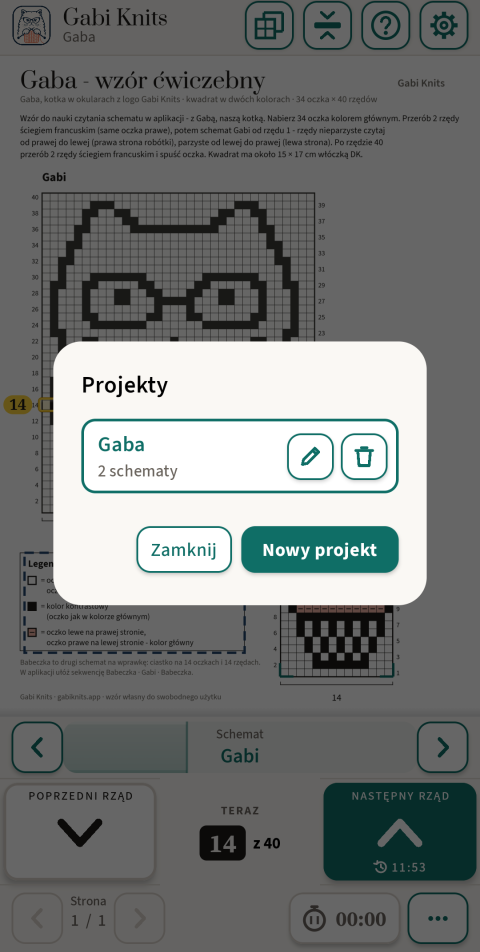
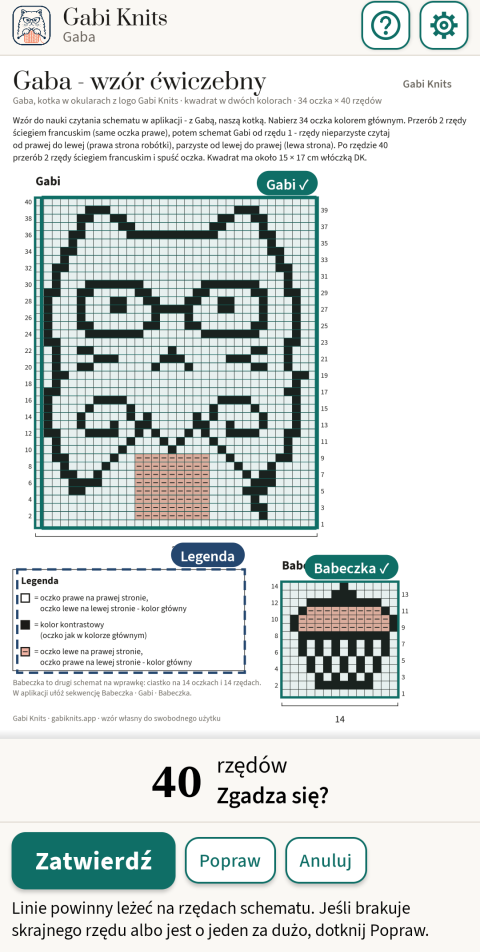
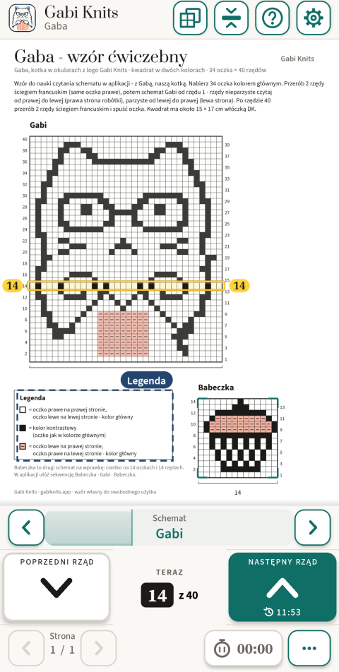
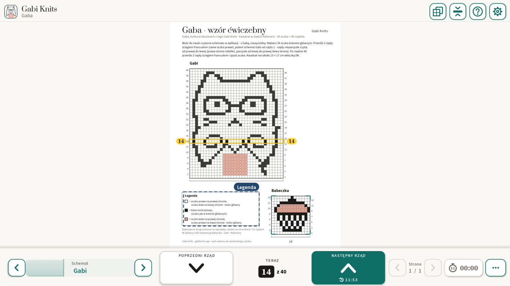

Czytnik schematów dziewiarskich
Zawsze wiesz, który rządek dziergasz.
Otwórz wzór PDF i dotknij schematu – Gabi Knits sama znajdzie rządki i wyraźnie zaznaczy ten, który właśnie dziergasz. Jeden duży przycisk prowadzi do następnego rządka, a postęp zapisuje się sam.
- Bez konta
- Bez reklam
- Działa bez Internetu


Sama znajduje schemat
Dotknij schematu na stronie, a aplikacja sama znajdzie jego ramkę i rządki. Ty tylko sprawdzasz i zatwierdzasz.
Rządek zawsze na widoku
Bieżący rządek jest wyraźnie zaznaczony, z numerem po obu stronach. Jeden duży przycisk „Następny rządek”, wygodny dla jednej ręki.
Stworzona dla e-inku
Czerń na bieli, bez animacji, duże przyciski i numery rządków – projektowana pod tablety BOOX od pierwszej wersji.
Dla tabletów e-ink BOOX
Od początku projektowana pod e-ink
Gabi Knits powstała na BOOX Note Air i na nim sprawdzamy każdą wersję. Na e-inku ekran jest spokojny: czerń na bieli, nic się nie przesuwa i nic nie zależy od koloru. Na telefonie i zwykłym tablecie ta sama aplikacja korzysta z koloru i płynnego ruchu.
Gruba ramka zamiast koloru
Bieżący rządek otacza wyraźna czarna ramka – dobrze widoczna na czarno-białym ekranie.
Bez animacji
Strony i rządki zmieniają się jednym krokiem. Na ekranie e-ink nic nie płynie ani nie przygasa.
Duże przyciski i numery
Duże pola rządków i numery rządków czytelne znad robótki.
Sprawdzona na BOOX Note Air
Działa na tabletach BOOX ze Sklepem Play, w pionie i w poziomie.
Jak to działa
Trzy kroki od PDF-a do drutów.

Otwórz wzór PDF
Dotknij „Projekty”, potem „Nowy projekt” i wybierz plik. Projekt dostaje własną nazwę i pamięta, w którym miejscu jesteś.

Dotknij schematu
Gabi Knits sama znajduje ramkę i rządki schematu, a potem prosi o sprawdzenie. Krawędzie możesz poprawić ręcznie.

Dziergaj rządek po rządku
Bieżący rządek jest wyraźnie zaznaczony, a licznik pokazuje „Rządek 14 z 40”. „Następny rządek” prowadzi dalej, „Poprzedni rządek” cofa.
Co potrafi
Tylko to, co pomaga przerobić rządek – nic, co by przeszkadzało.
Sekwencja
Ułóż kolejność dziergania schematów, np. Babeczka · Gabi · Babeczka. Na ostatnim rządku „Następny rządek” sam przechodzi do kolejnego schematu i jego strony.
Legenda pod ręką
Zaznacz legendę wzoru raz. Otwiera się jednym dotknięciem nad stroną, a rządek zostaje na swoim miejscu.
Kilka schematów w jednym wzorze
Każdy schemat pamięta swój rządek. Przełączasz strzałkami ‹ › na pasku przy liczniku – jednym dotknięciem, bez zasłaniania strony – albo pływającym widżetem.
Rządek na środku ekranu
Schemat przesuwa się pod stojącym paskiem, więc dziergany rządek zostaje na środku ekranu.
Licznik czasu
Sprawdź, ile trwał projekt. Liczy tylko wtedy, gdy go włączysz – także w projekcie bez schematu.
Pierwszy projekt z przewodnikiem
Przy pierwszym uruchomieniu samouczek prowadzi krok po kroku przez wzór ćwiczebny „Gaba” – kotkę Gabi w okularach i babeczkę.
Postęp zapisuje się sam
Każdy projekt pamięta stronę, schematy, rządki i czas dziergania. Historia rządków pokazuje ostatnie zmiany, a „Wróć do rządka 1” zaczyna schemat od nowa.
Sześć języków
Polski, angielski, niemiecki, norweski, duński i szwedzki.
Na e-inku, telefonie i tablecie
Jedna aplikacja, osobny układ dla każdego ekranu. Pion albo poziom, powiększenie od 100 do 500% albo Auto, a stronę obrócisz, gdy schemat leży bokiem.

Twoje wzory zostają u Ciebie
Wzory PDF, projekty i numery rządków zostają na Twoim urządzeniu. Aplikacja łączy się z Internetem tylko po to, żeby obsłużyć zakup i sprawdzić dostęp – a bez połączenia po prostu dziergasz dalej.
Przeczytaj politykę prywatności- Bez konta
- Bez reklam
- Bez śledzenia i analityki
- Działa bez Internetu
Pytania
Czy potrzebuję konta?
Nie. Nie ma rejestracji ani logowania. Zakup przechodzi przez Twoje konto Google Play.
Czy działa bez Internetu?
Tak. Czytanie wzorów i dzierganie nigdy nie wymagają Internetu. Połączenie jest potrzebne tylko do zakupu i od czasu do czasu do potwierdzenia subskrypcji.
Na jakich urządzeniach działa?
Na Androidzie 8.1 lub nowszym: na telefonach, tabletach i tabletach e-ink BOOX ze Sklepem Play.
Jakie wzory się nadają?
Wzory PDF ze schematem rysowanym na siatce. Aplikacja jest sprawdzona na kilkudziesięciu schematach DROPS; siatkę i rządki znajduje sama, a krawędzie możesz poprawić ręcznie.
Co mogę zrobić bez zakupu?
Dodawać projekty, otwierać wzory, przeglądać strony i zaznaczać schematy. Dzierganie rządek po rządku z zaznaczonym rządkiem wymaga darmowej próby albo zakupu.
Mam nowy telefon. Czy płacę jeszcze raz?
Nie. Zainstaluj Gabi Knits na tym samym koncie Google i dotknij „Przywróć zakupy”.
Jak anulować subskrypcję?
W Google Play: Płatności i subskrypcje → Subskrypcje. Twoje projekty zostają na miejscu.
Czy jest wersja na iPhone’a albo iPada?
Jeszcze nie – najpierw Android.

Masz pytanie albo pomysł?
Napisz do Gabi – o wzorze, który nie działa, o pomyśle na aplikację albo z pytaniem przed premierą. Gabi czyta każdą wiadomość.
contact@gabiknits.app